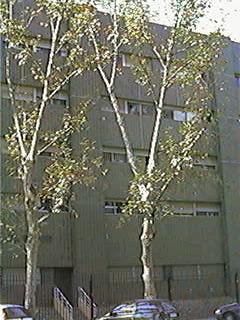
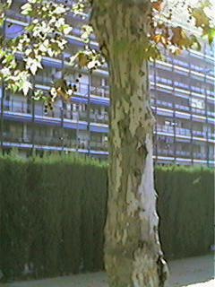
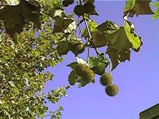

|
Platanus x hispanica
Miller ex Münch., Hausvater 5: 229
(1770)
P. occidentalis x P. orientalis; P. hybrida; Brot.; ;
P. orientalis
var. acerifolia Aiton
|
Platanáceas |
| Plátano, plátano de sombra | Árbol caducifolio |
|
Árbol caducifolio,
monoico, de 10-17 m [puede alcanzar los 35 m de altura
(1)]; tronco de
80-150 cm de diámetro, que suele quedar hueco al
envejecer, con
corteza formada por placas exfoliables, de color verde
claro,
grisáceo o pardusco. Hojas alternas, pecioladas, con estípulas caducas, glabrescentes; lámina de c. 18 x 20 cm, palmatífida, con 5 lóbulos, truncada o algo cordada en la base; lóbulos foliares triangulares, sinuado-dentados, agudos. Inflorescencias globosas, largamente pedunculadas, péndulas, unas con flores femeninas y otras con flores masculinas. Flores unisexuales, muy pequeñas, verdosas, dispuestas apretadamente; cáliz con 3-6 sépalos escuamiformes; corola con 0-6 pétalos escariosos; flores masculinas con 3-8 estambres de filamento muy corto, las femeninas hipoginas, con 6 ó más carpelos libres, pelosos. Infrutescencia de c. 30 mm, globosa. Fruto poliaquenio; aquenios con pelos largos en la base y estilo persistente. |
 Fotos: Carlos Romero Zarco, Nov. - 2002 |
|   |
Observaciones:
El
nombre
genérico procede del griego, y
alude a sus hojas anchas y planas; el específico se
lo puso
Philip Miller (1691-1771) al describir
la especie a partir de plantas cultivadas
supuestamente de origen
español.
Muy
utilizado en
Europa occidental como árbol
de sombra en calles y paseos ajardinados.
|
| Área de origen.- No se conoce en estado silvestre y se supone que es originario de la Península Ibérica, posiblemente por hibridación entre P. orientalis y P. occidentalis, pero hay quien opina que se trata en realidad de una variedad ibérica de P. orientalis L., especie de la península Balcánica y el Himalaya. Se cultiva en Europa desde finales del s. XVI (1). | |
| Uso en el campus: 7 ejemplares viejos dentro del Campus y muchos más en la Avda. Reina Mercedes, como árbol de sombra. Fueron plantados antes de la construcción del Campus y tienen más de 30 años (tal vez 80). Dos de los ejemplares del parking de bicicletas murieron por la sequía entre 2003 y 2005 y fueron talados en 2006. | Localización:
Zona
central del
Campus
Parking de Bicicletas Edificio verde E.T.S. Ingeniería Informática: Jardín Sureste |
|
(1) M.L. Rocha Afonso (1990). Platanus L., in Castroviejo & al. (eds.) Flora Iberica vol. 2, Platanaceae-Plumbaginaceae (partim), Real Jardín Botánico de Madrid, CSIC. |
|
| Mª Jesús Osuna Núñez (2002) & Carlos Romero Zarco (2003); revisada en 2006 | |